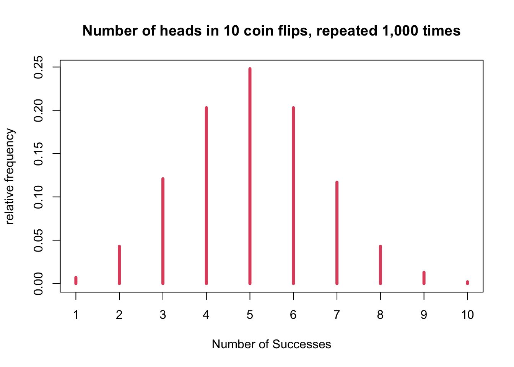
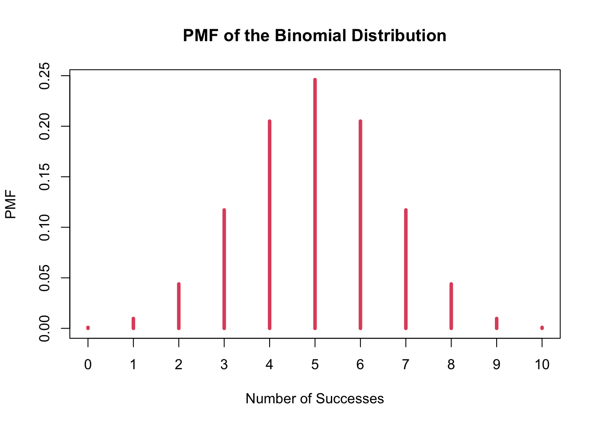
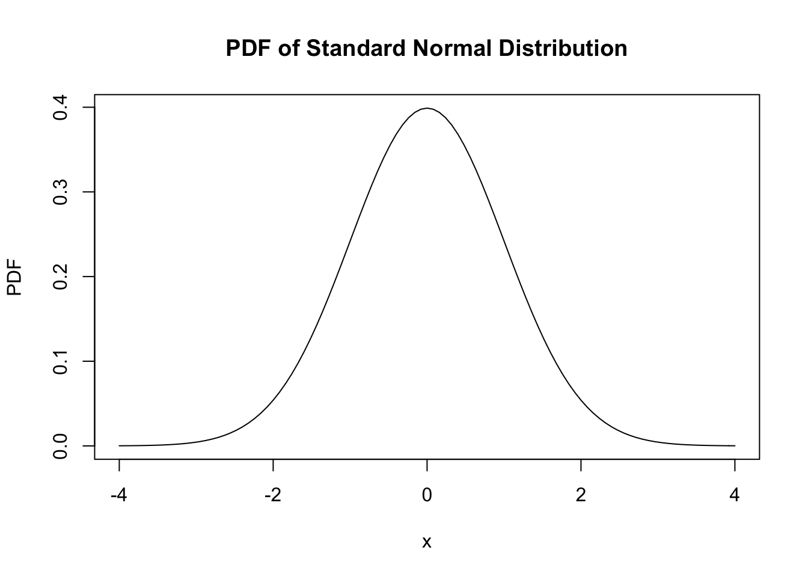
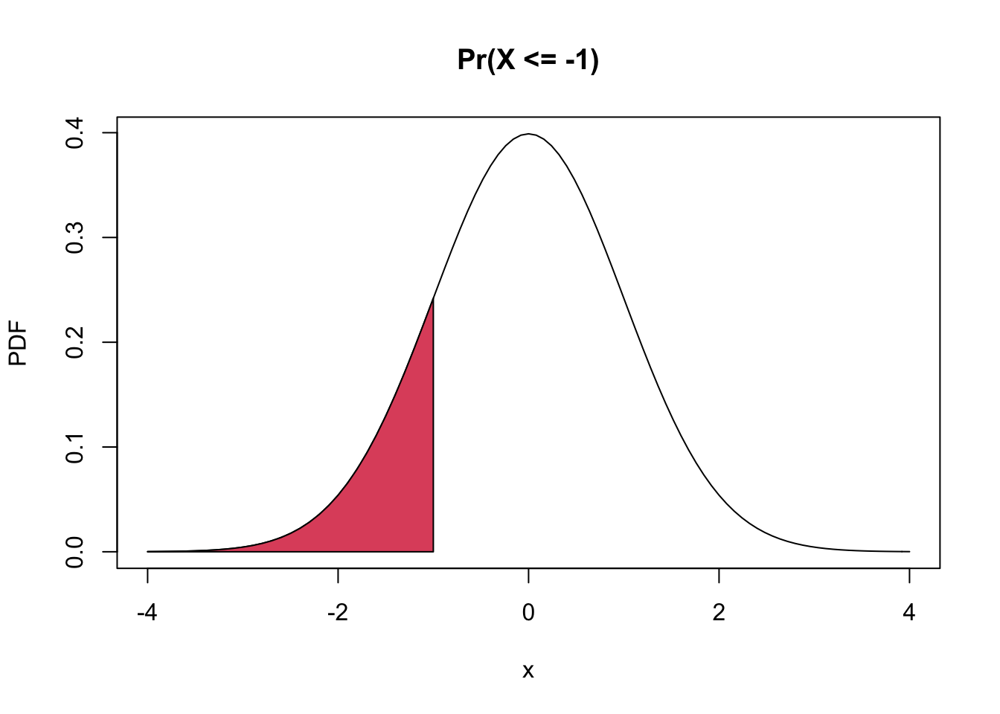

the process of learning some properties of the population starting from a sample drawn from this population.
For example, you may be in interested in learning about the cholesterol level of patient with heart disease, but we cannot measure the whole population.
But you can measure the cholesterol level of a random sample of the population and then infer or generalize the results to the entire population.
Terms we need to clarify:
Usually we are interested in a function of the data generating distribution. This is often referred to as parameter (or the parameter of interest)
Use sample in order to estimate the parameter of interest
Use a function of empriical distribution, referred to as estimator.
(Mathematical notation) for parameters, Greek letters, while for estimate, Roman letter.
(Mathematical notation) “hat” notation places a “hat” over the Greek letter for the parameter.
Let’s assume that we want to estimate the average cholesterol value of healthy individuals in the United States. Let’s assume that we have cholesterol measurements for a random sample of the population (more on this later!).
The data generating distribution is unknown when we collect a sample from a population. In non-parametric statistics we aim at estimating this distribution from the empirical distribution of the sample, without making any assumptions on the shape of the distribution for the population values. However, it is often easier to make some assumptions about the data generating distribution. These assumptions are sometimes based on domain knowledge or on mathematical convenience.
One commonly used strategy is to assume a family of distributions for the data generating distribution, for instance the Gaussian distribution or normal distribution.
In order to make inference from a random sample to the whole population, we need some notion of randomness. To study randomness we need the concept of probability. Hence, probability is one of the foundations of statistical inference.
Recall that a variable is a measurement that describe a characteristic of a set of observations. A random variable (r.v.) is a variable that measures an intrinsically random process, e.g. a coin toss. Before observing the outcome, we will not know with certainty whether the toss will yield “heads” or “tails”, but that does not mean that we do not know anything about the process: we know that on average it will be heads half of the times and tails the other half. If we refer to \(X\) as the process of measuring the outcome of a coin toss, we say that \(X\) is a random variable.
\(S\): Sample space or the space of all the possible values of \(X\)
The PMF of a discrete random variable \(X\) is a function \(p\) with the follwing properties.
\[ p(x)>=0 \quad \forall x) \in S \]
\[ \sum_{x \in S} p(x)=1 \]
set.seed(1)
rbinom(n = 1, size = 10, prob = 0.5)## [1] 4rbinom(n = 1, size = 10, prob = 0.5)## [1] 4(x <- rbinom(n = 1000, size = 10, prob = 0.5))## [1] 5 7 4 7 7 6 6 3 4 4 6 5 6 5 6 9 5 6 7 4 6 3 4 5
## [25] 2 5 7 4 5 5 5 4 6 6 6 3 6 5 6 6 6 5 5 6 2 5 6 6
## [49] 5 7 5 4 3 3 4 5 6 5 7 4 5 4 6 4 5 6 3 7 4 7 4 4
## [73] 5 7 7 5 6 8 5 6 5 4 6 4 6 3 4 3 4 3 6 7 6 6 5 5
## [97] 6 5 6 4 4 9 6 4 3 5 7 5 8 6 4 5 3 2 6 3 5 6 9 5
## [121] 5 4 6 5 5 4 4 5 5 3 2 6 7 5 5 5 8 5 6 5 4 4 6 5
## [145] 4 6 3 7 5 5 4 5 5 4 5 3 4 4 4 7 5 6 7 5 3 4 6 4
## [169] 6 7 7 5 5 7 6 6 5 7 4 4 7 5 7 4 6 6 7 5 6 5 3 7
## [193] 4 5 3 7 4 6 4 4 5 4 4 5 5 3 4 6 8 3 6 8 6 4 6 8
## [217] 8 4 4 3 4 5 7 5 4 2 5 7 4 3 4 6 5 6 6 5 5 5 4 5
## [241] 7 3 5 4 5 3 5 7 6 7 5 5 5 3 4 5 4 7 5 4 4 6 6 3
## [265] 3 6 5 3 3 3 5 3 4 4 4 4 5 6 2 5 7 4 2 3 4 3 3 4
## [289] 4 3 8 4 5 6 3 3 2 7 6 3 5 5 4 9 4 6 3 5 3 4 7 6
## [313] 4 5 3 4 8 6 6 4 5 9 7 8 6 6 4 6 8 4 5 6 3 4 5 3
## [337] 5 8 9 4 5 5 6 4 5 3 4 6 5 3 6 5 8 4 7 3 7 5 3 4
## [361] 7 4 5 7 3 6 6 5 5 5 7 4 4 5 4 7 4 5 5 5 6 8 4 4
## [385] 6 7 3 8 3 3 7 5 3 4 6 4 4 3 6 4 8 7 7 6 4 6 2 7
## [409] 9 4 6 6 6 5 5 4 6 6 5 5 6 3 4 5 3 7 7 7 7 3 5 5
## [433] 3 6 6 2 5 7 2 4 5 5 4 5 4 7 3 3 8 5 4 3 2 6 5 8
## [457] 5 3 3 5 1 5 4 7 6 3 5 6 5 8 6 5 3 4 7 5 5 6 6 3
## [481] 7 8 5 5 4 1 7 3 2 7 4 3 5 5 5 5 7 3 5 6 6 6 5 8
## [505] 5 7 6 5 7 5 1 6 6 4 6 5 4 6 7 6 4 3 5 7 6 6 8 9
## [529] 5 2 4 4 3 2 4 4 4 5 5 8 6 4 4 3 9 5 5 6 7 5 2 7
## [553] 6 5 3 2 6 7 6 3 4 6 7 6 4 6 4 8 3 5 4 3 6 5 6 5
## [577] 7 6 4 8 6 2 5 5 3 5 8 6 5 4 6 6 7 6 5 5 5 5 6 7
## [601] 3 6 8 8 4 5 8 3 7 4 5 5 6 5 3 4 6 3 7 4 5 3 4 5
## [625] 4 6 5 7 7 4 4 7 5 4 3 3 6 6 7 4 7 4 6 4 2 7 6 7
## [649] 6 7 4 5 5 3 4 5 6 7 4 6 3 6 4 5 7 4 4 6 6 5 6 5
## [673] 5 5 4 3 4 4 6 6 3 5 5 5 5 5 2 7 3 5 6 5 5 5 6 3
## [697] 8 5 7 7 6 6 6 3 5 5 7 6 6 5 3 6 5 5 2 3 5 6 1 5
## [721] 7 6 4 7 4 5 5 2 6 5 6 2 6 4 4 7 3 2 4 5 5 4 4 5
## [745] 5 7 3 6 5 7 5 3 5 4 5 4 8 5 6 3 7 4 4 3 5 6 7 6
## [769] 5 6 2 9 6 5 2 6 4 10 7 6 6 5 7 3 5 4 5 2 4 3 7 4
## [793] 5 6 4 5 6 4 7 2 8 6 4 6 4 8 4 2 4 5 4 8 5 5 7 7
## [817] 4 6 4 5 6 6 7 2 4 4 4 6 6 7 7 6 5 5 3 7 8 5 7 3
## [841] 4 5 5 5 2 6 6 4 8 6 2 8 4 2 4 6 4 4 2 4 6 2 3 5
## [865] 5 6 6 3 5 8 6 4 5 2 4 5 6 9 4 7 8 7 5 6 6 6 5 4
## [889] 1 3 3 2 4 3 5 2 1 3 7 6 4 4 4 3 3 3 3 2 5 6 6 3
## [913] 2 5 3 6 6 7 4 8 8 2 7 6 6 4 5 5 5 7 4 4 6 6 7 5
## [937] 7 4 4 7 2 5 5 5 6 6 7 6 3 4 6 7 5 4 7 4 5 1 4 5
## [961] 3 6 4 4 4 7 9 6 9 5 5 8 3 3 2 5 6 6 3 3 8 5 4 5
## [985] 5 4 10 5 3 5 5 4 3 6 6 4 4 4 5 6plot(table(x) / sum(table(x)), type = 'h', col = 2, lwd = 4,
xlab = "Number of Successes",
ylab = "relative frequency",
main = "Number of heads in 10 coin flips, repeated 1,000 times")
dbinom() function -1dbinom() function can be used to
compute the binomial PMF.
x: the number of “successes”, which in
this case is the number of heads.dbinom(x = 5, size = 10, prob = 0.5)## [1] 0.2460938dbinom() function -2dbinom() also can be used to show the
entire distribution by setting up x as a vector.
(p <- dbinom(x = 0:10, size = 10, prob = 0.5))## [1] 0.0009765625 0.0097656250 0.0439453125 0.1171875000 0.2050781250
## [6] 0.2460937500 0.2050781250 0.1171875000 0.0439453125 0.0097656250
## [11] 0.0009765625pmf <- as.table(p)
names(pmf) <- 0:10
plot(pmf, col = 2, lwd = 4,
xlab = "Number of Successes",
ylab = "PMF",
main = "PMF of the Binomial Distribution")
rbinom() function to simulate performing
the experiment of 10 coin flips 1000 times and for each experiment of 10
flips, we recorded the number of heads.table(x) / sum(table(x))## x
## 1 2 3 4 5 6 7 8 9 10
## 0.007 0.043 0.121 0.203 0.248 0.203 0.117 0.043 0.013 0.002round(pmf, 3)## 0 1 2 3 4 5 6 7 8 9 10
## 0.001 0.010 0.044 0.117 0.205 0.246 0.205 0.117 0.044 0.010 0.001\[ p(x)>=0 \quad \forall x) \in S \]
\[ \int_{x \in S} f(x)=1 \]
\[ f(x)=\frac{1}{\sqrt{2 \pi \sigma^{2}}} e^{-\frac{(x-\mu)^{2}}{2 \sigma^{2}}}, \text { where }-\infty<x<\infty \]
curve(dnorm, from = -4, to = 4,
xlab = 'x',
ylab = "PDF",
main = "PDF of Standard Normal Distribution")
dbinom(), we can use
dnorm() function to get the value of the
density for any real number.dnorm(1) gives the
f(1), which is the value from the curve
for a standard normal distribution (since specific values for
the mean and standard deviation were note specified) and it is
NOT the probability of getting a 1 from a standard
normal distribution.curve(dnorm, from = -4, to = 4,
ylab = 'PDF',
main = 'Pr(X <= -1)')
coord.x <- c(-4, seq(-4, -1, by = 0.1), -1)
coord.y <- c(0, dnorm(seq(-4, -1, by = 0.1)), 0)
polygon(coord.x, coord.y, col = 2)
\[ F(x)=\operatorname{Pr}(X \leq x) \]
\[ F(x)=\int_{X \leq x} f(x) d x \]
\[ F(x)=\sum_{X \leq x} p(x) d x \]
pnorm(): to compute the
CDF of the normal distribution variable, or to compute
the probability of any interval.
pnorm(-1, 0, 1)## [1] 0.15865531 - pnorm(2)## [1] 0.02275013pnorm(1) - pnorm(-1)## [1] 0.6826895\[ F(q)=\operatorname{Pr}(X \leq q)=p \]
\[ q=F^{-1}(p) \]
qnorm(): to compute the quantiles of
the standard normal distribution.
qnorm(0.95) # equal to qnorm(0.95, 0, 1)## [1] 1.644854dnorm(): to compute the PDF of a
normal random variablepnorm(): to compute its CDFqnorm(): to compute is quantile.rnorm(): to generate (siulate) a
random sample from the normal distributionThe expected value or mean of a random variable is the center of its distribution.
In case \(X\) is a discrete random variable, the expected value is
\[ E[X]=\sum_{x \in S} x p(x) \]
where p(x) is the PMF of X.
\[ E[X]=\int_{x \in S} x f(x) d x \]
where f(x) is the PDF of X.
\[ p_{n}(x)=\sum_{i=1}^{n} x_{i} p_{n}\left(x_{i}\right)=\frac{1}{n} \sum_{i=1}^{n} x_{i} \]
\[ \operatorname{Var}(X)=E\left[(X-\mu)^{2}\right] \]
\[ \operatorname{Var}(X)=E\left[X^{2}\right]-E[X]^{2} \]
\[ S^{2}=\frac{1}{n-1} \sum_{i=1}^{n}\left(x_{i}-\bar{x}\right)^{2} \]
where \(\bar{x}\) is sample mean.